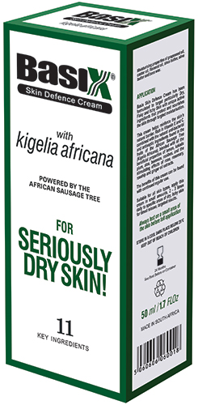
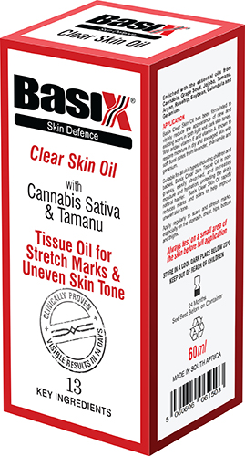

Three reasons to defend against dry skin:
- Restore lost moisture
- Reduce the appearance of ageing
- Repair damaged skin
Three Choices of Skin Defence

Basix Seriously Dry Skin
For dry flaky itchy skin, soothes eczema psoriasis and dermatitis.
With 11 active ingredients including natural healing kigelia africana, kakadu plum, ginger, rose, rosehip and aloe vera.
- Natural skin repair cream with healing ingredients, carefully selected 11 Natural Active Ingredients: Kigelia Africana Fruit of the African Sausage Tree, Australian Kakadu Plum, Aloe Vera, Lemon, Ginger, Rose Oil, Rosemary, Rosehip Vitamin E, Green Tea, Rooibos contain Anti-bacterial, Anti-inflammatory, Anti-viral, Anti-septic and Anti-oxidant properties which helps restore and repair your skin.
Psoriasis, eczema, dermatitis, and acne cream that targets and repairs.
- Provides soothing relief and healing action for even the worst cases. See before and after pictures. Also repairs skin damaged by Acne, Bed Sores, Nappy Rash, Ulcers, Scarring, Burns, Blisters, Scalds, Sun Burn.
- No ordinary moisturiser! All natural active ingredients have been selected for their medicinal properties used by African and Australian tribal doctors. Scientists recently confirmed that Kigelia Africana contain sitosterol and stigmasterol a natural plant steroid that can boost the immune system and help your body regenerate and fight inflammation. A natural alternative to Steroid and Cortisone Creams.
- Relieves, repairs and restores skin - suitable for all skin types, this cream will provide relief while the active ingredients stimulate the body to fight back against the ravages of the skin conditions, repairing and restoring damaged skin.

Basix Tissue Oil
Proven to reduce stretch marks scars and uneven skin tone.
Clinically proven to reduce stretch marks and scars in 14 days, apply daily on marks and scars, especially on the stomach, chest, hips, bottom and thighs.
- Suitable for all skin types, Basix Clear Skin Tissue Oil is non-greasy, easily absorbed and increases moisture and hydration, protecting the skin's natural barrier.
- Containing 9 beneficial ingredients:
- Cannabis Sativa Oil - plumps tired dry skin and reduces the appearance of fine lines and wrinkles.
- Tamanu Oil - contains fatty acids, promotes collagen, assists in regenerating damaged skin cells and adds moisture into the skin.
- Argan Oil - contains oleic acid, moisturises, rehydrates, regenerates and soothes skin.
- Grape seed Oil - contains anti-oxidants, improves skin elasticity.
- Jojoba Oil - deeply hydrating, nourishes and soothes dry skin, helps to fade fine lines and wrinkles.
- Rosehip Oil - rich in Vitamin A, fights free radicals and restores moisture and collagen.
- Soybean Oil - rich in Vitamin E, restores moisture.
- Calendula Oil - promotes renewal of old skin cells.
- Geranium Oil - improves skin elasticity by boosting elastin fibres.